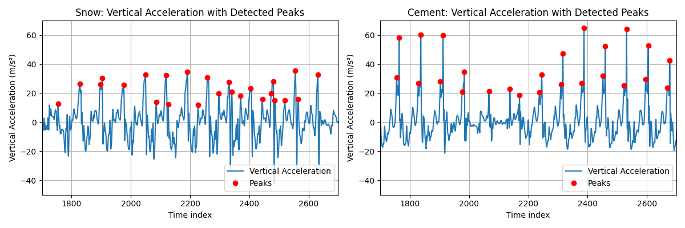
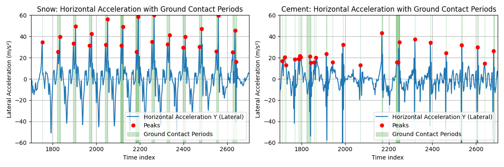

Current running platforms lack quantitative surface characterization despite its critical influence on performance and injury risk. We developed a smartphone-based method using ankle-mounted inertial sensors to measure runner-surface interactions through two metrics: the Runner-Perceived Hardness Index (RPHI) and the Runner-Perceived Traction Index (RPTI). Two runners performed a total of 19 analyzable trials across cement and snow surfaces. Results showed cement had a significantly higher RPHI (15.32±5.53 vs. 1.94±1.12 m/s²) and a significantly lower RPTI (16.52±2.17 vs 25.00±3.35 m/s²) than snow. These findings validate the use of smartphones for real-time surface characterization, enabling data-driven training optimization previously limited to laboratory settings.
Modern running platforms comprehensively track atmospheric conditions such as temperature, humidity, and wind, that influence performance (Ely et al., 2007; Vihma, 2010). However, these platforms cannot quantify surface conditions, which are critical factors that directly affect biomechanics, energy expenditure, and injury risk. Surface hardness determines the magnitude of impact forces, while traction governs propulsion efficiency and stability demands (Boey et al., 2017).
Smartphones equipped with inertial measurement units (IMUs) offer an opportunity to address this gap. Their accelerometers and gyroscopes can capture gait dynamics at sufficient sampling rates (Faisal et al., 2019). We leverage the IMU sensor to capture surface and runner interactions. This study aims to: (1) develop smartphone-based metrics for surface and runner interactions, (2) validate discrimination between surfaces with known mechanical differences, and (3) demonstrate the feasibility of real-time implementation.
We hypothesize that ankle-mounted smartphones can differentiate surfaces through impact patterns (hardness) and horizontal acceleration variability (traction) during running.
Two recreational runners participated in this within-subject study after providing written informed consent. Participants 1 and 2 (both male) met the inclusion criteria of maintaining a weekly running volume of at least 20 km, reporting no lower extremity injuries within the preceding six months, and having regular experience running on varied surface types. Participant 1 was 17 years old, 178 cm tall, and weighed 70 kg, while Participant 2 was 50 years old, 175 cm tall, and weighed 80 kg. The age difference provided insight into the potential generalizability of the results to other runner demographics.
Data collection employed an iPhone 14 containing a 6-axis inertial measurement unit with a tri-axial accelerometer capable of ±16g measurement range and 0.00024g resolution, alongside a tri-axial gyroscope with ±2000°/s range. The native 100 Hz sampling rate exceeded the Nyquist frequency required for capturing running dynamics, as gait frequencies typically remain below 3 Hz with harmonic content under 20 Hz. The device was secured to the outside of the right ankle with an adjustable neoprene strap and hook-and-loop fasteners.
Testing occurred on two contrasting surfaces selected to maximize mechanical differences. The cement surface consisted of a level concrete pathway with uniform texture and no visible cracks or irregularities. The snow surface comprised a level path covered with 1-10 cm of fresh snow, providing variable depth but consistent coverage. Environmental conditions remained stable throughout testing (temperature 2-5°C, no active precipitation, minimal wind).
Each participant completed ten trials per surface. The trials involved continuous locomotion along a straight path ranging from 10 to 20 meters, and participants were instructed to maintain their natural gait pattern at self-selected speeds ranging from walking to running. Depending on the selected speed, trial durations varied from 10 to 40 seconds, ensuring the capture of at least 15 to 20 gait cycles per trial. A 60-second rest interval between trials prevented fatigue accumulation.
Raw sensor data underwent a multi-stage processing pipeline to extract biomechanically relevant metrics. The fundamental challenge was separating gravity-induced accelerations from motion-related accelerations given the constantly changing device orientation while running. We addressed this issue using a custom filter. The filter implementation integrated angular velocity measurements from the gyroscope to track changes in device orientation, while using accelerometer data to correct for integration drift.
where θ represents orientation, ω is angular velocity, dt is the sampling interval, and α is the weighting factor. We empirically determined that α = 0.98 provided an optimal balance between responsiveness and stability.
Following coordinate transformation to the Earth reference frame, vertical accelerations consistently aligned with gravitational direction regardless of device orientation. Gait event detection employed a peak-finding algorithm on the vertical acceleration signal. Foot strikes manifested as distinct peaks exceeding 12 m/s², a threshold determined through visual inspection of pilot data and validated against video recordings. To prevent multiple detections within a single stance phase, we enforced a minimum 300 ms separation between peaks, corresponding to maximum cadences of 200 steps/minute. Additional criteria included peak prominence exceeding 5 m/s² to eliminate noise-induced false positives.
Surface characterization metrics quantified biomechanical responses to different surfaces. The Runner-Perceived Hardness Index (RPHI) calculated mean net vertical acceleration across all detected foot strikes within a trial, subtracting gravitational acceleration (9.81 m/s²) to isolate impact-specific forces:
The Runner-Perceived Traction Index (RPTI) computed mean peak horizontal acceleration magnitude during ground contact phases:
These metrics provide intuitive interpretations where higher RPHI indicates harder surfaces and higher RPTI suggests lower traction.
Descriptive statistics characterized central tendency and variability for each metric by surface type. Given the small sample size and potential variance differences between surfaces, we employed Welch's t-test for between-surface comparisons, which do not assume equal variances. Effect sizes were calculated using Cohen's d with pooled standard deviation, interpreting d > 0.8 as large effects. All analyses used Python 3.9 with NumPy 1.21.0 and SciPy 1.7.0. Statistical significance was set at p < 0.05.
Data processing yielded 19 analyzable trials from the 20 that were collected. One cement trial was excluded due to sensor displacement. The final dataset included eight cement trials and 11 snow trials for RPHI and RPTI analysis. All retained trials exhibited clear gait patterns, with identifiable foot strikes and consistent sensor signals throughout the recording period. The cement surface was assumed to be hard and have high traction, and the snow surface was assumed to be soft and have low traction.


| Metric | Surface | Number of Trials | Mean±SD (m/s²) | 95% CI | p-value | Cohen's d |
|---|---|---|---|---|---|---|
| RPHI | Hard (Cement) | 8 | 15.32±5.53 | [10.69, 19.95] | <0.001 | 3.66 |
| Soft (Snow) | 11 | 1.94±1.12 | [1.19, 2.69] | |||
| RPTI | Hard (Cement) | 9 | 16.52±2.17 | [14.85, 18.19] | <0.001 | 2.97 |
| Soft (Snow) | 10 | 25.00±3.35 | [22.60, 27.40] |
Surface hardness discrimination through RPHI revealed striking differences between conditions. Cement surfaces generated mean vertical impact accelerations of 15.32 ± 5.53 m/s² above gravitational baseline, with individual trial means ranging from 10.17 to 22.49 m/s². These values indicate peak accelerations reaching approximately 2.5 times gravitational acceleration, corresponding to ground reaction forces of 2.5-3.0 times body weight. In marked contrast, snow surfaces produced dramatically attenuated impacts averaging only 1.94 ± 1.12 m/s² above gravity, with trial values spanning 1.16 to 4.49 m/s². This represents an 87% reduction in impact magnitude compared to cement, approaching the theoretical minimum where vertical acceleration barely exceeds gravity.
The statistical comparison confirmed highly significant differences between surfaces (t = -6.74, df = 9.3, p < 0.001), with an exceptionally large effect size (Cohen's d = 3.66) far exceeding conventional thresholds for practical significance. The 95% confidence intervals showed no overlap between surface types (cement: 10.69-19.95 m/s²; snow: 1.19-2.69 m/s²), indicating robust discrimination capability.
Surface traction characterization through RPTI exhibited an inverse pattern to hardness measurements. Snow surfaces generated mean peak horizontal accelerations of 25.00 ± 3.35 m/s² during ground contact phases, with individual trials ranging from 20.31 to 30.83 m/s². These elevated horizontal accelerations reflect the combined effects of actual foot slippage on the low-friction surface and compensatory neuromuscular adjustments to maintain stability. Cement surfaces produced significantly lower RPTI values of 16.52 ± 2.17 m/s² (range: 12.84- 19.03 m/s²), consistent with efficient force transfer on high-traction surfaces where minimal energy is lost to slip.
The 51% increase in horizontal accelerations on snow compared to cement was statistically significant (t = 6.61, df = 16.3, p < 0.001) with a very large effect size (d = 2.97). The 95% confidence intervals again showed clear separation (cement: 14.85-18.19 m/s²; snow: 22.60-27.40 m/s²).
Visual inspection of acceleration time series revealed distinct temporal patterns between surfaces. Cement trials displayed highly regular vertical acceleration peaks with consistent amplitudes and inter-strike intervals, suggesting stable gait patterns. Peak shapes were sharp and narrow, indicative of the rapid loading characteristic of rigid surface impacts. Snow trials exhibited greater variability in both peak amplitude and timing, with broader peak shapes suggesting prolonged ground contact as the foot compressed the compliant surface.
This study demonstrates that smartphones can quantify biomechanically relevant surface properties during running. The large effect sizes validate our approach while revealing distinct biomechanical adaptations to surface conditions. These findings align with and extend previous research on running surface interactions while pioneering the use of ubiquitous consumer technology for biomechanical assessment.
Our observed 8 times difference in vertical acceleration between cement and snow surfaces corroborates previous laboratory-based findings. Boey et al. (2017) reported 2.5 times differences in tibial acceleration between concrete and grass surfaces using research-grade accelerometers, with concrete producing peak accelerations of 8-12g compared to 3-5g on grass. Our cement values of approximately 2.5g (when converted from m/s²) appear lower due to ankle placement versus tibial mounting, as impact attenuation increases distally along the kinetic chain. The magnitude of surface-related differences, however, remains consistent with these specialized sensor studies.
The horizontal acceleration patterns we observed extend findings from Hollis et al. (2021), who used wearable IMUs to examine speed and surface effects. While they focused on temporal parameters and overall acceleration magnitudes, our approach specifically isolated horizontal components during ground contact to quantify traction. Their reported increase in acceleration variability on compliant surfaces aligns with our 51% higher RPTI values on snow, supporting the interpretation that low-traction surfaces demand greater neuromuscular adaptation.
Seshadri et al. (2019) reviewed wearable sensors for athlete monitoring but noted the absence of surface-specific metrics in commercial devices. Our smartphone-based approach directly addresses this gap, demonstrating that consumer hardware can achieve a level of discrimination capability comparable to research-grade equipment. The complementary filtering technique we employed mirrors methods used in specialized gait analysis systems, validating smartphones as legitimate biomechanical assessment tools.
This study validates the smartphone-based quantification of runner-surface interactions, addressing a critical gap in running analytics. The RPHI and RPTI metrics demonstrated exceptional surface discrimination (d>2.9) using consumer technology in field conditions. By transforming ubiquitous smartphones into biomechanical assessment tools, this approach democratizes access to surface-specific training insights. Integration into existing platforms could enable evidence-based optimization of the thousands of foot strikes comprising each run, balancing performance gains with injury prevention across varied terrains.